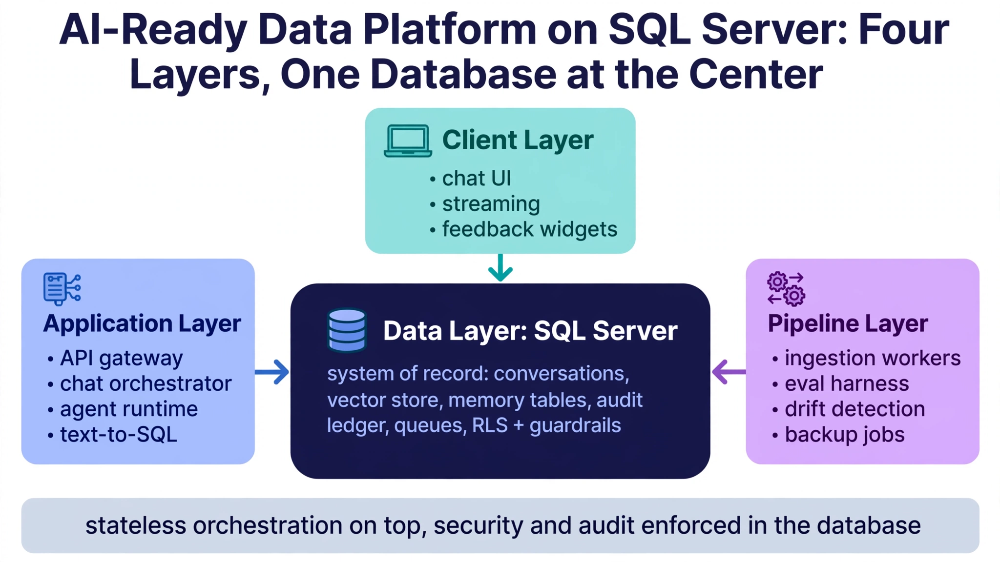

Architecture Reference: Production AI App on SQL Server
Thirty-nine chapters of patterns need one page that shows how they fit together. This final chapter is the architecture reference: the complete system diagram in words, the request lifecycle of a single chat turn touching a dozen patterns, the data flow of the ingestion pipeline, the operational runbooks checklist, and the build order for a team starting from zero. When someone asks "how does it all hang together?" — this is the answer.
---
40.1 The System at a Glance

Figure 40.1 — AI-ready data platform: four layers, one database at the center.
The arrows all point inward for a reason: the database is the system of record, and everything else is stateless orchestration around it. The client layer — chat UI, streaming, feedback widgets — talks to the application layer of API gateway, chat orchestrator, agent runtime, and text-to-SQL, which in turn reads and writes the SQL Server data layer holding conversations, the vector store, memory tables, the audit ledger, and queues. The pipeline layer keeps the whole thing honest: ingestion workers, the eval harness, drift detection, and backup jobs all run against that same database. RLS and guardrails are enforced in the data layer precisely so no stateless component can bypass them — the principle this entire book repeats.
→Application layer: API gateway (auth, rate limiting §25, tenant resolution §18), chat orchestrator (session §7, memory assembly §8–10, prompt construction §37.2), agent runtime (§20, §26), text-to-SQL service (§22–23).
→Data layer (SQL Server): conversations and messages (§6), vector store (§3, §15), memory tables (§8–10), audit and ledger (§24, §33), queues and blackboard (§13, §26, §28), catalog (§22–23). RLS (§12) and guardrails (§22.3) enforced here, not in the app.
The design principle repeated across all forty chapters: the database is the system of record for state, the application is stateless orchestration, and every cross-cutting concern (security, audit, cost, rate limiting) lives in the database where it cannot be bypassed.
---
40.2 A Single Chat Turn, End to End
One user message traverses the architecture like this:
1. Gateway authenticates, resolves tenant, checks the rate bucket (§25.1) and quota windows (§25.2) — 429/402 on failure.
2. Session validated (§7.2); conversation row locked with sp_getapplock (§7.2); user message inserted in the request transaction (§1.5).
Resist building Phase 3 before Phase 2 is solid — agents without quotas are billing incidents, memory without evaluation is unmeasurable, and text-to-SQL without audit is a compliance finding waiting to happen.
---
40.6 Anti-Patterns to Avoid
Forty chapters of patterns; a closing catalog of the mistakes they prevent:
→The God Prompt: stuffing everything into one giant system prompt instead of the memory architecture (§8–11). It works until the context window fills, then fails mysteriously.
→RLS in the application layer: filtering by tenant_id in code instead of the database (§12). One missed WHERE clause is a breach; the database never misses.
→Unbounded agents: agent loops without budgets (§26.5) or approval gates (§20.4). The first surprise is always the invoice.
→Embeddings without provenance: vectors with no record of model, version, or source (§17). Unmigratable, undebuggable, untrustworthy.
→Audit as an afterthought: bolting on logging after launch. The forensic queries (§24.4) only work if the data was captured — you cannot retroactively observe.
→Caching the uncacheable: semantic-caching time-sensitive answers (§34.1). A stale "your order shipped" is worse than a slow one.
→Phase 3 before Phase 2: agents and memory before quotas, audit, and observability (§40.5). Intelligence without operations is a demo, not a product.
Pin this list where the team can see it. Every anti-pattern here was learned the expensive way by someone — the cheapest lesson is the one you read instead of lived.
---
And the meta-lesson behind all forty chapters: the database is not the boring part of the AI stack — it is the part that makes the exciting parts trustworthy. Prompts are ephemeral, models are interchangeable, but the state in SQL Server is what persists, what bills, what complies, and what the user comes back to. Invest in the data layer with the same seriousness you invest in model selection, and the AI application becomes a system instead of a demo. That is what this book was for.
---
If you take one thing from this book, take the request lifecycle in §40.2: nine stages, each independently built, tested, and observed. Tape it to the wall. Every production incident you will ever have in this system is one of those nine stages failing — and now you know which one to look at first.
---
Key Takeaways
→The database is the system of record; the application is stateless orchestration; security, audit, cost, and rate limiting live in the database where they cannot be bypassed.
→A single chat turn traverses nine stages — rate check, session, cache, memory, retrieval, prompt, generation, audit, memory update — each independently built, tested, and observed.
→Operate on a cadence: daily dashboards and alerts, weekly maintenance, monthly ledger and margins, quarterly reviews and drills, one incident runbook.
→Build in phases — chat, multi-tenant production, intelligence, hardening — and never let Phase 3 ambition outrun Phase 2 foundations.
Test yourself on this chapter
5 questions · instant scoring · explanations included
Keep going. You're reading AI-Native Apps on SQL Server — one of seven free deep-dives in the DBA Library, covering SQL Server performance tuning, high availability, security, automation, and more. Browse the full library →